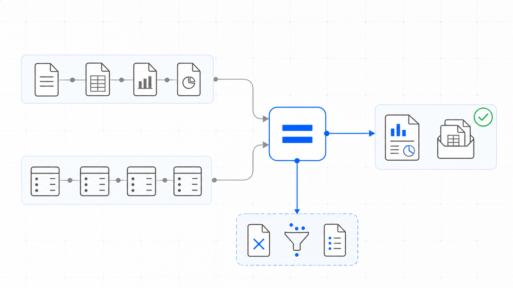

10,3791
Tests
the collected checks that pin this engine's behavior
ENGINE 32
SFS-E32-COE · CLOSING CONTROLS · REV 2026-07-24 · PRODUCTION
PRODUCTION = runnable end-to-end, CI-backed, full test suite passing. All data fictional and seeded.
Did the home close, and does its closing package agree with itself?
When a residential developer's home reaches close of escrow the accounting team assembles a package -- a settlement statement, a balanced closing journal entry, a revenue-recognition line, a loan release reconciled to the lender's statement, and a cost-of-sale relief -- and this engine proves, unit by unit, that the package agrees with itself. It is a tie-out check, not an underwriting one: what a home should have sold for, whether the proforma was right, whether the loan should have been made are questions a different engine owns. The engine reads the nine artifacts a closing file carries -- the unit register, the proforma assumptions, the settlement register, the closing journal-entry register, the revenue schedule, the loan-release register, the cost-of-sale schedule, the closing summary and the closing report -- and runs twenty-five deterministic controls over them. Is the file complete; is the unit register sound and does every closed home carry its full package; does each closing entry foot with a receivable derived rather than typed; does the settlement statement recompute -- total charges, closing costs and net to seller re-summed from the components; do the rate-derived fees strike at their proforma rates, and are an off-rate broker commission and an over-allowance concession flagged for a reviewer; was revenue recognised in the close-of-escrow month and the deferred upgrade reversed in full; does each loan release roll forward and tie to the lender's loan statement, with the bank remittance covering the scheduled release price; does the cost-of-sale margin recompute and the prepaid commission relief cap at the prepaid balance; and does the rollup -- the closed count, the total net to seller and every per-unit tie-out flag -- recompute from the units underneath it. It compares every figure with exact ==, treats the release-price gate as >=, and never writes to a source artifact.
A close-of-escrow package looks like the most finished paper a developer produces: the home sold, the money moved, the entry balanced, the report footed. That is exactly why it drifts. None of the ways it goes wrong look wrong in a folder of settlement statements. An entry balances but its receivable was typed rather than plugged; a settlement total was keyed instead of summed; a rate-derived fee was struck a few hundred dollars off its proforma rate; revenue landed a month late; the internal loan release and the lender's statement disagree by a figure nobody tied; and the rollup states a closed count, a net-to-seller total and a per-unit tie-out flag that nobody recomputed from the settlements and entries beneath them. The engine rebuilds every derived figure from the base facts through the same settlement kernel that produced the data, compares with exact ==, ships a planted-defect file for every registered control, and states its benchmark as a command rather than a claim. A figure keyed instead of derived stays invisible until someone recomputes the closing the developer already booked.
Nine control families run in registry order over each closing file. The first proves the others had something to read: a control that passes because its artifact was absent reports assurance it never performed, so completeness is settled before anything is recomputed.
When a residential developer's home reaches close of escrow the accounting team assembles a package: a settlement statement, a balanced journal entry, a revenue-recognition line, a loan release tied to the lender's statement, and a cost-of-sale relief. Every one of those is a spreadsheet assembled under deadline, and each goes wrong in ways nobody watches. The entry does not foot, or its Accounts Receivable plug was typed rather than derived. The settlement total settlement charges, total closing costs or net to seller was keyed instead of summed, or a rate-derived fee -- the listing sales fee, the warranty reserve -- was struck at the wrong rate. Revenue lands in the wrong month, when residential sales revenue is earned only at close of escrow. The internal loan release and the lender's loan statement disagree, or the bank remittance falls short of the scheduled release price. And the rollup states a closed count, a total net to seller or a per-unit tie-out flag that nobody recomputed from the settlements and entries underneath it. None of these are judgement calls. They are equalities, thresholds, date-gates and membership checks -- a total against its re-summed components, a receivable against the derived plug, a fee against its proforma rate, a recognition month against the close date, an ending balance against the lender statement with ==, a remittance against the release price with >= -- which a deterministic control settles better than a folder of spreadsheets inherited by whoever handles closings this quarter.
The seeded demo runs every control over every closing file7. The CLI generates twenty-seven fictional closing files -- one clean baseline and one carrying each of the twenty-six planted defects -- then runs all twenty-five controls over each. The clean file returns PASS with no flags; every defect file returns REVIEW or FAIL and names the control it tripped along with the reason that control exists.
The loan roll-forward and the lender tie are independent8. One defect file moves a home's stated loan ending balance and its lender-statement figure together, so the roll-forward from beginning plus activity no longer holds while the two ending figures still agree -- loan_ending_recomputes fails and loan_ties_lender_statement does not. A separate defect moves only the lender figure and trips loan_ties_lender_statement alone, proving the two controls catch different breaks.
The tie-out flag is recomputed, not read back9. A defect file flips a closed home's summary tie-out flag to false while its underlying settlement, entry, revenue line, loan release and cost-of-sale entry all still recompute. rpt_unit_tied_recomputes rebuilds the flag from that package and fails against the stated value, proving the summary is recomputed from the evidence beneath it rather than trusted as written.
| Command | Operation | Output | Exit | Artifacts |
|---|---|---|---|---|
python run.py | regenerate the seeded fictional corpus, run all twenty-five controls, write both reports | per-file verdicts and every actionable finding, then the overall verdict | 2 for the bundled corpus, which carries a planted defect for every control by design | closing_report.json, closing_report.md, samples/ |
python -m closing_engine samples | analyze an existing folder of closing files without regenerating it | per-file verdicts and findings | 0 PASS / 1 REVIEW / 2 FAIL / 3 usage | none unless --json or --md is passed |
python -m closing_engine samples --generate --quiet | regenerate the corpus and print only the overall verdict | a single verdict line | 0 PASS / 1 REVIEW / 2 FAIL / 3 usage | samples/ |
python -m pytest closing_engine/tests -q | run the full test suite for this engine | 10379 passed | 0 when every test passes | none |
| Measure | Result |
|---|---|
| Engine tests10 | 10,379 tests collected live collection from the engine directory |
| Registered controls11 | 25 controls counted from the registry, not from documentation |
| Planted defects12 | 26 defect files every registered control has at least one file that trips it |
| Control coverage13 | 100 percent of controls with a planted defect no control ships without a file demonstrating it firing |
The engine has no write path and therefore no autonomy to gate. It produces findings; a person decides whether a home is carried into the close and whether a broken figure is corrected at its source.
Deterministic envelope. seeded fictional inputs, read-only operation, offline default mode.
Demo gate. FAIL on the bundled corpus, by design -- it carries a planted defect for every registered control
| Severity | Verdict | Action |
|---|---|---|
| No findings above PASS | PASS | carry the mechanically clean closing file into the documented sign-off and close review |
| One or more FLAG, no FAIL | REVIEW | a human confirms each flag; a broker commission booked off the proforma rate and a concession above the assumed allowance both land here |
| One or more FAIL | FAIL | the home or figure is not carried into the close until the failing control is cleared -- an entry that does not foot, a settlement line that does not recompute, a fee off its rate, revenue in the wrong month, a loan release that does not tie, or a rollup that does not recompute |

Distribution: public repository, MIT license.
One conversation: you describe the work that consumes your team's month; we tell you plainly what this engine can take over, what it can't, and what a scoped first phase would cost. Your people keep approval authority.
Book a free consultation